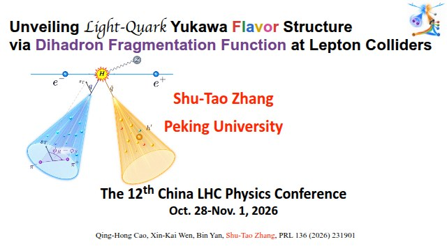
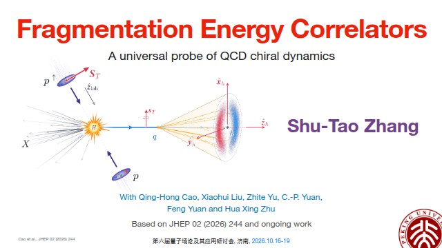

Oct 28 – Nov 1, 2026 · 18 slides
Unveiling Light-Quark Yukawa Flavor Structure via Dihadron Fragmentation Function at Lepton Colliders
The 12th China LHC Physics Conference
View slidesPeking University
Theoretical particle physics
QCD & hadron structure
A place for research,
notes, and a little curiosity.
Personal academic homepage
I work on theoretical particle physics at Peking University, with a focus on QCD, hadronization, and spin-dependent fragmentation.
My research uses energy correlators and hadron-pair observables to study nonperturbative QCD dynamics and explore collider probes of light-quark Yukawa couplings. My recent work also explores chiral effective theory and operator methods for spin observables.
Explore my recent talksUsing fragmentation energy correlators to connect energy flow, hadron formation, and the chiral dynamics of QCD.
Studying Collins effects and spin-dependent fragmentation through factorization, scale evolution, and effective descriptions.
Exploring dihadron fragmentation as a spin analyzer and a probe of light-quark Higgs interactions at lepton colliders.

Oct 28 – Nov 1, 2026 · 18 slides
The 12th China LHC Physics Conference
View slides
Oct 16–19, 2026 · 20 slides
A universal probe of QCD chiral dynamics
第六届量子场论及其应用研讨会 · 济南
View slidesDates refer to the conference periods. Slides open as standalone presentations.
Mathematical notes, music, and small things made for the web.
Browse all interests